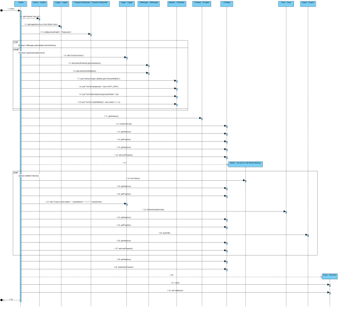
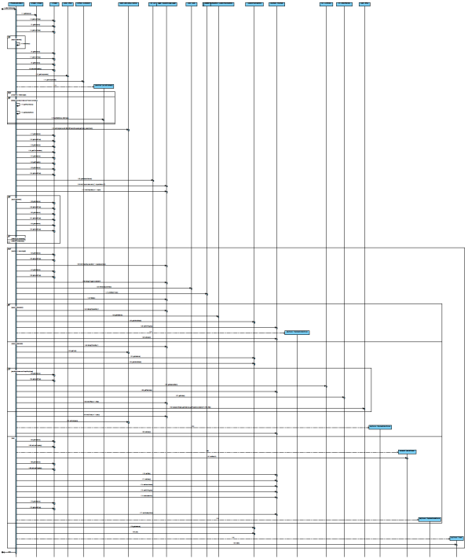
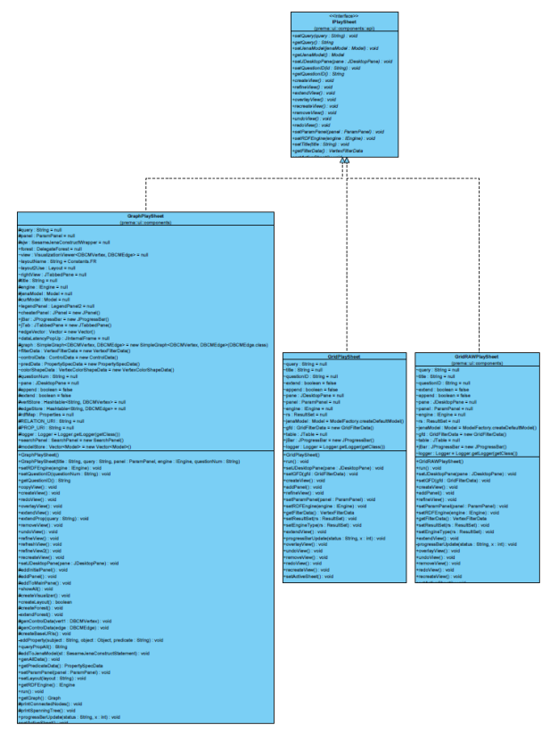
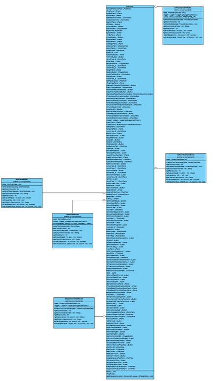
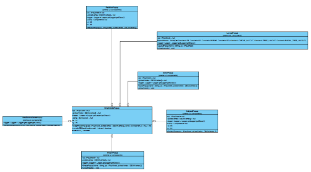
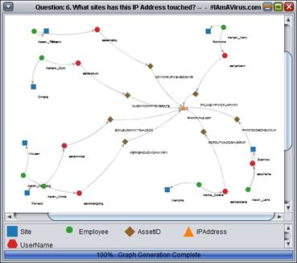

Information regarding Semoss code
1.2 ::
Source Code Directory Structure
4.2.2 Remote Server Repository (NEED
TO LOOK AT THIS SECTION)
This guide takes an in depth look at the code behind SEMOSS and should be used as a jumping point for those interested in modifying features or developing additional features for SEMOSS. This guide highlights the pieces that are most crucial to the functioning of SEMOSS as well as those that are of most interest to a potential user/developer
Note that this is not a comprehensive look at all of the code that makes up SEMOSS but rather a way of explaining the most critical pieces of code and describing how they interact with each other. This guide should be used in conjunction with the SEMOSS User Guide as well as supporting documents such as Javadocs, all of which can be found on SEMOSS.org.
This document contains:
In order to begin working on SEMOSS, there are a number of files that must be downloaded and programs that must be installed. This section lays out what each of the steps are the must be taken to begin editing the code.
SEMOSS has been built using the Eclipse integrated development environment and it is therefore advisable to use the latest version of Eclipse for editing the code. Eclipse is available for download at http://www.eclipse.org/downloads/index-developer.php
A Java Development Kit (JDK) is also necessary to open SEMOSS for editing. While most of the SEMOSS functionality works with a 64-bit JDK, it is recommended to use 32-bit to ensure all of the features work correctly. The latest JDK is available for download at http://www.oracle.com/technetwork/java/javase/downloads/index.html
The source code of SEMOSS is available for download from GitHub which can be accessed through the site http://semoss.org/ OTHER DETAILS ABOUT DOWNLOAD FROM GITHUB
The following lays out the hierarchy used to organize the directory of SEMOSS and gives a brief overview of what each folder contains.
Java source folders that SEMOSS uses to build the user interface and handle most of the functionality. There are a number of packages within the src folder to further organize the code. To better understand the organization of the various packages, please consult the Javadoc that can be found here.
All database information, including how to access a given database and the data itself. The data generally takes the form of a .jnl file (though many other file types can be used such as .xml, .rdf, and .ttl) while the properties of the database are stored in a .properties file. The files in this folder are referenced in the RDF_Map.prop file.
Version information displayed on the Help tab of SEMOSS.
Images used throughout the application.
Properties files that contain all information surrounding the perspectives and questions that are displayed for a given engine (database). This information includes what perspectives and questions to display for an engine as well as details about how to process a given question such as what SPARQL query to run and what play sheet to display it on. The files in this folder also are referenced in the RDF_Map.prop file.
All of the JAR files that are referenced in the source code.
All of the training material displayed on the Help tab of SEMOSS is contained in this folder.
SEMOSS uses numerous JAR files from a wide variety various sources, including Apache, Jena, Sesame, and Jung. All of the JAR files can be found in the RDFGraphLib folder of the SEMOSS source code.
Directly in the main directory there are also a couple of important files regarding the configuration of SEMOSS. These files get run on Startup and play a crucial role in determining how the application functions.
This is the central properties sheet that is read by the Starter class on startup. All of the information contained in this file is critical to the loading of data into SEMOSS and its general functioning. Many of the pieces of this file can be found referenced in Section 6 of this document, but the following is a high level overview of what this file contains:
This section of the Map file specifies what engines should be started when the application is first run as well as what other files (questions file, database properties file) are related to that specific engine.
Lays out what listeners are connected to what Java Swing components on the main PlayPane. This section also details some default settings for the listeners, such as their view and right panel components. All of this information is read on startup and is necessary for the correct functioning of the buttons.
Contains information regarding how different node types are displayed by default on the graph play sheet, including the nodes shape and color.
Lays out how SEMOSS should translate Excel data to RDF. This section specifies the full RDF URI to be used for each of the different node and relationship types. More information on this can be found in Section 6 of this document.
This section contains additional RDF triples that are included in every RDF database created through SEMOSS. These triples specify mainly subclass relationships of the node and relationship types and are used for SPARQL inference.
This file contains initiation information for the logger that is used throughout the application.
This section contains a number of sequence diagrams that lay out some of the most critical processes of SEMOSS.
This lays out the sequence of events that occur when the SEMOSS starter is run which calls perna.ui.main.Starter.main(String[]). A PDF version of this diagram is available for download at _______________________.

Figure __: _________________________
This lays out the sequence of steps that are taken to process a query. This action occurs when the Create button is pushed and the function exists in perna.ui.main.listener.imple.ProcessQueryListener.actionPerformed(ActionEvent). A PDF version of this diagram is available for download at _______________________.

Figure __:
______________
This section lays out the component diagrams for some of the most critical components of SEMOSS.
This is the component diagrams of the current play sheets in SEMOSS. There are three implementing classesGraphPlaySheet, GridPlaySheet, and GridRAWPlaySheetof the interface IPlaySheet. A PDF version of this diagram is available for download at _______________________.

Figure __: _____________
This component diagram lays out how our current Java Swing UI components are currently laid out. This is the foundation of the applications interface. A PDF version of this diagram is available for download at _______________________.

Figure __ : ______________________
This diagram lays out the layout of the popup that is used currently by the GraphPlaySheet. A PDF version of this diagram is available for download at _______________________.

Figure __: ______________________
The IEngine.java class is the interface class of SEMOSS used to standardize the functionality of the unique engine classes. As of version 1.0, SEMOSS has only implemented engines that connect to RDF triple stores, but an engine in SEMOSS can be written to take in any database. The following table provides a brief description of the most commonly used functions of IEngine.
|
Interface
Method |
Description |
|
openDB(String propFile); |
Opens a database as defined by its properties file. |
|
closeDB() |
Closes the data base associated with the engine. |
|
execGraphQuery(String query) |
Runs the passed string query against the engine and returns graph query results. The query passed must be in the structure of a CONSTRUCT SPARQL query. |
|
execSelectQuery(String query) |
Runs the passed string query against the engine as a SELECT query. The query passed must be in the structure of a SELECT SPARQL query. |
|
execInsertQuery(String query) |
Runs the passed string query against the engine as an INSERT query. The query passed must be in the structure of an INSERT SPARQL query or an INSERT DATA SPARQL query. |
|
getEngineType(); |
Gets the type of the engine. The engine type is often used to determine what API to use while running queries against the engine. |
There are other other functions associated with each engine as well. Please refer to Javadoc at ___________________________ for additional information.
Version 1.0 of SEMOSS contains a number of different engine types that provide the ability to handle data in a number of different formats. The biggest differentiator between the engine classes is that some support local data repositories while others connect to remote repositories.
Local repositories are databases that reside in the db folder of the SEMOSS tool. There are a few local repository engine classes that are supported as of Version 1.0. SEMOSS at any given time can have multiple engines running of the same type, but each engine must connect to a unique data store. The data stores that these local data engine classes connect to must be local to a given users application. The following table lays out the different engine classes that connect to local repositories:
|
Engine
Class Local Repository |
Description |
|
BigDataEngine.java |
Uses BigData SPARQL processing which implements the Sesame API Reads a .jnl file as its triple store Has superior processing power but customization is difficult |
|
RDFFileJenaEngine.java |
Uses Apache Jena processing and API Can read a wide array of triple store formats (.rdf, .xml, .ttl, etc.) Straightforward customization |
|
RDFFileSesameEngine.java |
Uses OpenRDF Sesame processing and API Can read a wide array of triple store formats (.rdf, .xml, .ttl, etc.) Straightforward customization |
Remote repositories are databases that reside on another server and require a live connection for the engine to access it. These databases usually require a REST API on the remote Apache server and there can be multiple access entries. The following table lays out the current engines that connect to remote data stores:
|
Engine
ClassRemote Repository |
Description |
|
RemoteSparqlEngine.java |
Uses BigData SPARQL processing which implements the Sesame API Reads a hosted data store Has superior processing power but customization is difficult |
Play sheets in SEMOSS are the components that filter, analyze and visualize data. There are a number of different play sheets with unique visualization components, allowing for the same data to be displayed and manipulated in very different ways. Play sheets are setup similarly to the way engines are set up. The following section takes an in-depth look at the play sheet interface as well as each of the play sheet classes currently implemented in SEMOSS.
The IPlaySheet.java class is the play sheet interface for SEMOSS. All play sheets implement this interface which includes the basic functions of a data visualizer. Heres a table of some of the most important functions of this interface.
|
Interface Method |
Description |
|
setQuery(String query); |
Sets a query to the play sheet which can be later used to populate the play sheet with specific data. |
|
setRDFEngine(IEngine engine) |
Sets the RDF engine for the play sheet to run its query against. |
|
createView() |
Creates the view based off the data passed in. |
|
refineView() |
Recreates the visualizer and the repaints the play sheet without recreating the model or pulling anything from the specified engine. |
|
extendView() |
Adds additional data to the model that is already associated with the play sheet. |
|
removeView() |
Removes data from current model that is associated with the play sheet. |
|
undoView() |
Removes from the play sheet's current model everything that was returned from the query the last time the model was augmented. |
There are other functions associated with play sheets as well. Please refer to the Javadoc at ___________________________ for additional information.
SEMOSS 1.0 is packaged with three different play sheet types. Two of the play sheets are very similar in the way they display dataGridPlaySheet and GridRAWPlaysheetbut differ in the way they process the data. The third play sheet, GraphPlaySheet, visualizes and processes the data very differently than the first two, creating a network graph rather than a grid. The following section briefly describes each play sheet.
GridPlaySheet.java is the component class that generates a table as the means of visualizing the data. This play sheet currently requires a SELECT SPARQL query to process the data correctly. The table can be sorted by clicking on a column header and the data can easily be copied and pasted into Excel. More information on this play sheets functionality can be found in the SEMOSS User Guide.
The following is a print screen of what the results look like in a GridPlaySheet.
Figure __ : Grid Play Sheet Output
GridRAWPlaySheet.java is similar to GridPlaySheet in that they both generate tables as data visualization. The main distinction is in the processing of the dataGridRAWPlaySheet stores and displays full URIs whereas GridPlaySheet only deals with the instance level of each RDF component. Like GridPlaySheet, this play sheet requires a SPARQL SELECT query to correctly process the data.
The following is a print screen of what the results look like in a GridPlaySheet.
Figure __ : ____________________________________
GraphPlaySheet.java is the play sheet class that generates a graph network for its data visualization. This play sheet processes the data very differently than the grid play sheets because it must get the data into a format that is recognized by the graphing component, Jung. This play sheet generally uses a CONSTRUCT SPARQL query. GraphPlaySheet has a lot of peripheral functionality as well that is accessible through the right click menu. Please reference the SEMOSS User Guide for further information on these functionalities.
The following is a print screen of what the results look like in a GraphPlaySheet:

Figure __ : Graph Play Sheet Output
The value of insights derived from SEMOSS is directly correlated to properness of the semantic ontologies that has been developed for the structure of the data. Ontologies are the structural frameworks for organizing the pieces of information in a database. A proper domain-specific metamodel can be an ontology. Creating metamodels involve the construction of concepts (data) and their relationships (how data pieces relate to each other). By learning how to effectively create and use metamodels, analysts can explore databases and identify meaningful insights inside SEMOSS. Usually, a metamodel is displayed as a map, as shown below for our security database in Figure 6.1.1.
Development of the metamodel is one of the most important and complex task that needs to be completed in order to be able to efficiently and effectively extract data from the engine. If the metamodel is not thorough, straightforward, and comprehensive, it will be very difficult to extract insights from any set of data. The most important paradigm to consider is that the metamodel should be constructed based on the fundamental relationships between the data, as opposed to a structure that is based on answering specific, known, questions from the data. This allows the database to be queried based on prospective insights (as opposed to modifying the database to allow for this to happen).
Figure 2.1.1 below contains the base metamodel for our sample security metamodel. The metamodel is constructed such that each of the node types and its relationships with other node types is represented by boxes and lines.

Figure 6.1.1: Security Database Metamodel